Manual de Instalación y Configuración de Emonitor
Este manual describe el proceso completo de instalación, configuración y puesta en marcha del sistema Emonitor para monitoreo de condición.
Alcance
- Instalación del software
- Configuración de dispositivos
- Integración con PLC
- Almacenamiento en base de datos
- Visualización de datos
Arquitectura
Sistema basado en:
- PLC Allen Bradley
- Sensores de vibración
- Servidor SQL
- Software Emonitor
Introducción
Emonitor es una plataforma para monitoreo de condición enfocada en análisis de vibraciones y mantenimiento predictivo.
Objetivo
Implementar un sistema de monitoreo que permita:
- Detectar fallas tempranas
- Analizar vibraciones
- Registrar datos históricos
Componentes del sistema
- Sensores (ej: Dynamix)
- PLC
- Red industrial
- Servidor
Requisitos del Sistema
Antes de iniciar la instalación y configuración de Emonitor, verifique que se disponga de los siguientes componentes de hardware, software e infraestructura de red.
Hardware
Controlador Industrial
- PLC Allen-Bradley compatible con la arquitectura de monitoreo implementada.
- Firmware actualizado y correctamente configurado.
Módulo de Monitoreo de Vibraciones
- Módulo Allen-Bradley Dynamix 1444 o equivalente compatible.
- Sensores de vibración correctamente instalados y cableados.
Estación de Trabajo o Servidor
- Computador industrial o servidor destinado a la ejecución de Emonitor.
- Procesador Intel Core i7 o superior.
- 8 GB de memoria RAM como mínimo (16 GB recomendados).
- 5 GB de espacio libre en disco como mínimo.
- Unidad SSD recomendada para mejorar el rendimiento de la base de datos.
Software
Emonitor
- Emonitor 4.2 o versión compatible.
Base de Datos
- Microsoft SQL Server 2017 o Microsoft SQL Server 2019.
- Ediciones Express, Standard o superiores.
Herramientas de Configuración
- Studio 5000 Logix Designer para la configuración y mantenimiento del PLC.
- FactoryTalk Activation Manager para la activación de licencias.
Red y Comunicaciones
Infraestructura de Red
- Red Ethernet industrial operativa.
- Conectividad estable entre PLC, módulos de monitoreo y servidor Emonitor.
Configuración de Red
- Direcciones IP configuradas correctamente para todos los dispositivos.
- Verificación de conectividad mediante pruebas de comunicación.
- Puertos requeridos habilitados en firewalls y equipos de red.
Protocolos de Comunicación
- Ethernet/IP para la comunicación entre los dispositivos Allen-Bradley.
- Comunicación habilitada entre Emonitor y la base de datos SQL Server.
Instalación de Emonitor
Paso 1: Preparación
- Verificar que el equipo cumpla con los requisitos de hardware y software.
- Instalar Microsoft SQL Server 2017 o 2019.
- Restaurar o crear la base de datos de Emonitor.
- Obtener el número de serie y la licencia del producto.
- Cerrar todas las aplicaciones en ejecución antes de iniciar la instalación.
Instalación de FactoryTalk Activation Manager
- Navegar a la carpeta
FTActivationdel medio de instalación. - Ejecutar
Setup.exe. - Seleccionar Install y completar la instalación.
FactoryTalk Activation Manager es necesario para activar las licencias de Emonitor.
Instalación de RSLinx Classic
- Navegar a la carpeta
RSLinxdel medio de instalación. - Ejecutar
Setup.exe. - Seguir las instrucciones del asistente de instalación.
RSLinx Classic es necesario para importar mediciones desde dispositivos como Dynamix 1444, XM y fuentes de datos OPC.
Paso 2: Instalación de Emonitor
- Ejecutar
Setup.execomo administrador. - Verificar la instalación de Microsoft .NET Framework.
- Aceptar el acuerdo de licencia.
- Revisar los requisitos del sistema y seleccionar Next.
- Seleccionar la carpeta de instalación.
- Seleccionar la carpeta del menú Inicio.
- Confirmar la configuración e iniciar la copia de archivos.
Paso 3: Configuración de Base de Datos
Base de Datos de Vibraciones
- Introducir el usuario y contraseña de la base de datos de Emonitor.
- Especificar el nombre o cadena de conexión del servidor SQL Server.
- Seleccionar Next.
Base de Datos de Configuración
- Introducir el usuario y contraseña de la base de datos EConfig.
- Seleccionar Next.
Si los datos de conexión son incorrectos, Emonitor mostrará errores de conexión al iniciarse.
Paso 4: Finalización
- Completar el asistente de instalación.
- Reiniciar el equipo.
- Iniciar Emonitor desde el menú Inicio.
Validación
- Abrir Emonitor correctamente.
- Verificar la conexión con SQL Server.
- Comprobar que las bases de datos se conectan sin errores.
- Confirmar la detección de dispositivos configurados.
- Verificar que la licencia se encuentre activa.
- Revisar que RSLinx pueda comunicarse con los dispositivos de campo.
Instalación y Preparación de Microsoft SQL Server para Emonitor
1. Objetivo
Configurar el motor de base de datos Microsoft SQL Server requerido para la instalación y operación de Emonitor 4.2, asegurando la correcta creación de bases de datos, usuarios y conectividad.
2. Requisitos Previos
- Microsoft SQL Server 2017 o 2019
- Acceso a Microsoft SQL Server Management Studio (SSMS)
- Archivos de respaldo:
emonitor.bakeconfig.bak
Nota: Si se está actualizando desde una versión anterior de Emonitor, se recomienda realizar un respaldo completo de las bases de datos existentes antes de continuar.
3. Instalación de SQL Server
La instalación de SQL Server debe realizarse conforme a la documentación oficial de Microsoft. Se recomienda que esta tarea sea ejecutada por un administrador de bases de datos.
Durante la instalación, asegurar:
- Instalación del componente Database Engine Services
- Configuración adecuada del sistema operativo compatible
- Servidor operativo y accesible en red
4. Configuración del Servidor SQL
4.1 Habilitación de TCP/IP
Es obligatorio habilitar el protocolo TCP/IP para permitir la comunicación con Emonitor.
Pasos:
- Abrir SQL Server Configuration Manager
- Ir a:
- SQL Server Network Configuration
- Habilitar:
- TCP/IP
- Reiniciar el servicio de SQL Server
5. Creación de Bases de Datos
Las bases de datos de Emonitor se crean restaurando archivos de respaldo proporcionados por el instalador.
5.1 Ubicación de archivos
Ruta:
C:\Backups\Emonitor
Archivos requeridos:
emonitor.bakeconfig.bak
5.2 Restauración de bases de datos
- Copiar los archivos
.baka una carpeta local del servidor SQL - Abrir SQL Server Management Studio (SSMS)
- Conectarse al servidor SQL
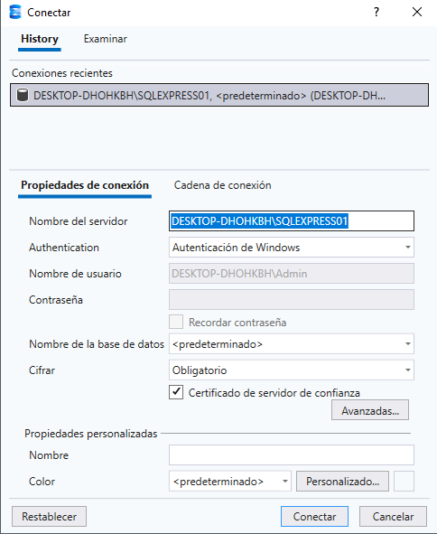
- En Object Explorer
- Click derecho en Databases
- Seleccionar Restore Database
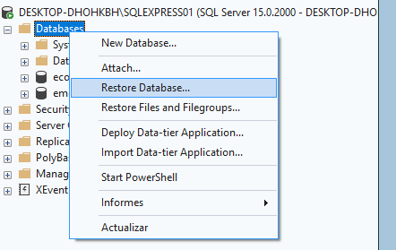
- Seleccionar Device
- Luego hacer clic en
... - Seleccionar Add y cargar el archivo
emonitor.bak - Confirmar con OK
- Repetir el proceso para
econfig.bak
6. Obtención del Nombre del Servidor
Durante la conexión en SSMS:
- Copiar el nombre completo del servidor SQL
-
Este valor será requerido durante la instalación de Emonitor
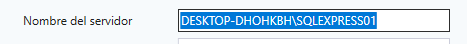
Ejemplo: -
SERVIDOR_SQL\SQLEXPRESS
7. Creación de Logins y Usuarios
Se deben crear usuarios independientes para cada base de datos. Al restaurar las bases de datos de Emonitor, estas pueden contener usuarios previamente configurados dentro del respaldo.
Sin embargo, se recomienda eliminar estos usuarios y recrearlos manualmente siguiendo el procedimiento establecido en este documento. Esto garantiza que:
- La configuración de autenticación sea correcta
- Los permisos estén adecuadamente asignados
- No existan inconsistencias entre logins y usuarios en SQL Server
Esta práctica evita errores comunes relacionados con accesos, conflictos de seguridad o problemas de conexión entre Emonitor y la base de datos.
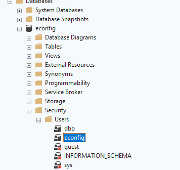
7.1 Usuario para base de datos Emonitor
- En Object Explorer:
- Expandir Security
- Click derecho en Logins
- Seleccionar New Login
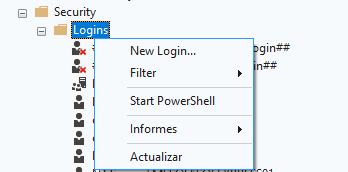
- Configurar:
- Login name:
Emonitor - Authentication: SQL Server Authentication
- Password: (definir contraseña segura)
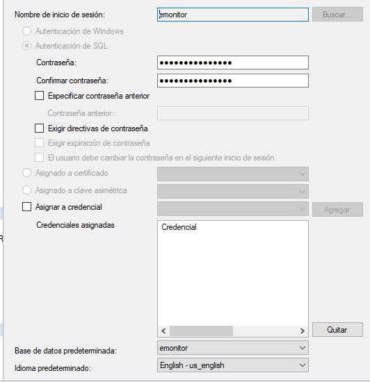
Recomendación: usar máximo 16 caracteres alfanuméricos
-
Desactivar: Enforce Password Policy
-
En Default database: Seleccionar:
Emonitor
7.2 Asignación de permisos
- Ir a: User Mapping
- Marcar: Base de datos
Emonitor - En roles: Seleccionar
db_owner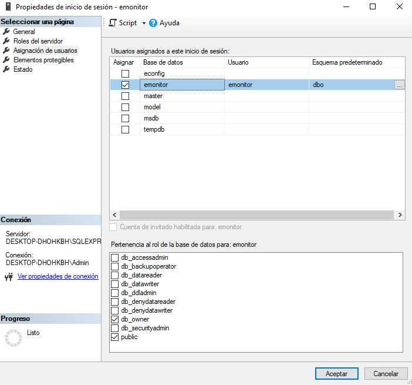
- Confirmar con OK
7.3 Usuario para base de datos EConfig
Repetir el mismo procedimiento anterior con:
- Login name:
EConfig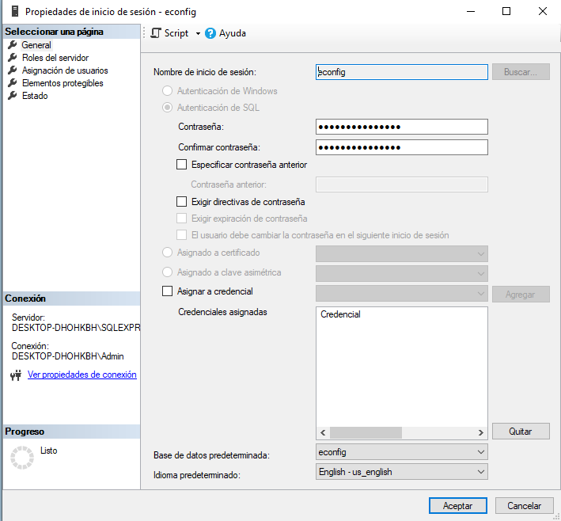
- Base de datos:
Econfig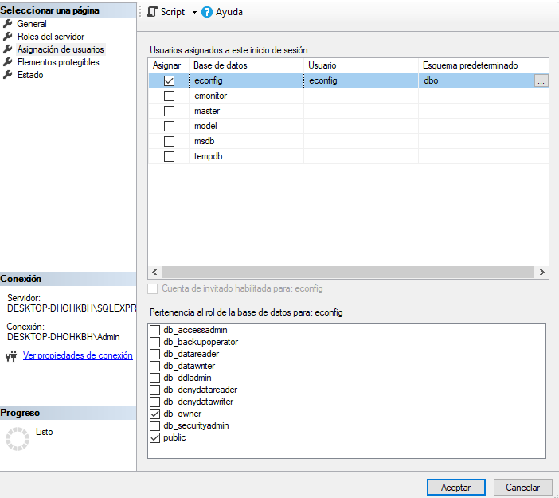
- Rol:
db_owner
8. Consideraciones Importantes
- Es obligatorio instalar Emonitor antes de completar la configuración total del sistema
- Verificar que las bases de datos se restauraron correctamente
- Confirmar que los usuarios tienen permisos adecuados
- Validar conectividad mediante TCP/IP
Configuración del modo de autenticación en SQL Server
Durante la configuración del servidor SQL, es necesario habilitar el modo de autenticación adecuado para permitir la conexión con Emonitor.
En la ventana de Propiedades del servidor, dentro de la sección Seguridad, se debe seleccionar:
-
Modo de autenticación de Windows y SQL Server Este modo, también conocido como Mixed Mode, permite:
-
Autenticación mediante cuentas de Windows
- Autenticación mediante credenciales propias de SQL Server
Esto es necesario debido a que Emonitor utiliza autenticación SQL para conectarse a las bases de datos.
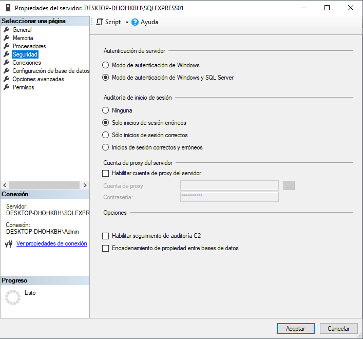
Importancia de la configuración
Si únicamente se habilita el modo de autenticación de Windows:
- No será posible utilizar usuarios como
EmonitoroEConfig - Se generarán errores de conexión durante la configuración del sistema
- La aplicación no podrá acceder a las bases de datos
Recomendación
Después de realizar este cambio, es necesario:
- Reiniciar el servicio de SQL Server
- Verificar que los logins creados funcionen correctamente
9. Validación
Se debe verificar:
- Existencia de bases de datos:
- Emonitor
- Econfig
- Usuarios creados correctamente
- Permisos asignados (db_owner)
- Conectividad desde Emonitor
10. Buenas Prácticas
- Realizar backups periódicos
- No utilizar el usuario
sapara conexiones de aplicación - Mantener control de accesos
- Documentar credenciales en entorno seguro
Configuración de Emonitor
Configuración de
- Crear nuevo proyecto
- Definir estructura de activos
Configuración de sensores
- Tipo: acelerómetro
- Unidades: mm/s o g
Configuración de medición
- Frecuencia
- Rangos
Conexión con PLC
Configuración en Studio 5000
- Abrir el proyecto correspondiente en Studio 5000 Logix Designer.
- Agregar el módulo Dynamix al árbol de E/S (I/O Configuration).
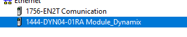
- Configurar la dirección IP del dispositivo de acuerdo con la arquitectura de red establecida.
- Verificar que el módulo se encuentre en estado operativo y sin errores de comunicación.
Configuración de Variables
Verificar la disponibilidad de las variables que serán utilizadas para el monitoreo y diagnóstico del sistema, incluyendo:
- Variables de vibración.
- Variables de estado del dispositivo.
- Variables de alarma y eventos.
- Variables de diagnóstico, si corresponde.
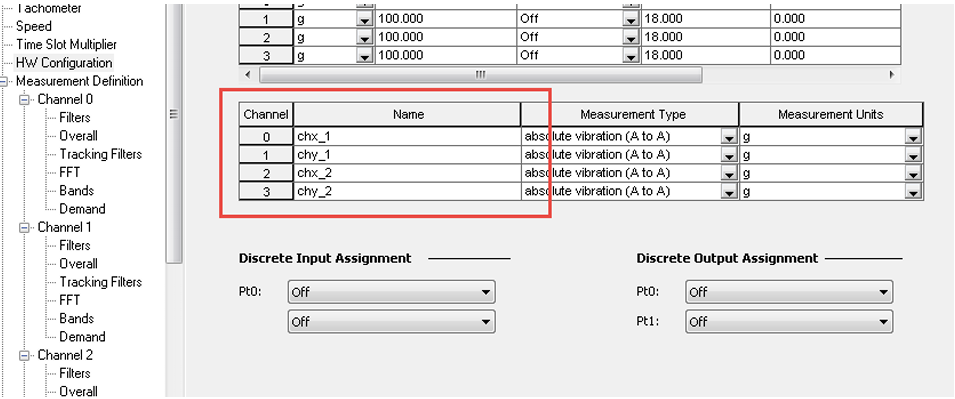
Configuración de la Comunicación
- Confirmar que la comunicación entre el controlador y el módulo Dynamix se realice mediante el protocolo Ethernet/IP.

- Verificar la correcta asignación de las conexiones de entrada y salida del módulo.
- Descargar la configuración al controlador y validar que no existan fallas de comunicación.
Validación de la Integración
- Colocar el sistema en operación.
- Verificar en el PLC la recepción y actualización de los datos provenientes del módulo Dynamix.
- Confirmar que las variables de vibración, estado y alarmas presenten valores coherentes.
- Acceder a Emonitor y verificar que las mediciones sean recibidas correctamente.
- Confirmar la actualización de los datos en tiempo real y la correcta asociación de los puntos de medición configurados.
Visualización de Datos
Dashboards
- Tendencias
- Alarmas
Análisis
- FFT
- Espectros
Reportes
- Exportación de datos
Troubleshooting
Problemas comunes
No hay comunicación con PLC
- Verificar IP
- Revisar red
No se guardan datos
- Revisar SQL Server
Error en sensores
- Verificar cableado
Logs
- Revisar registros del sistema